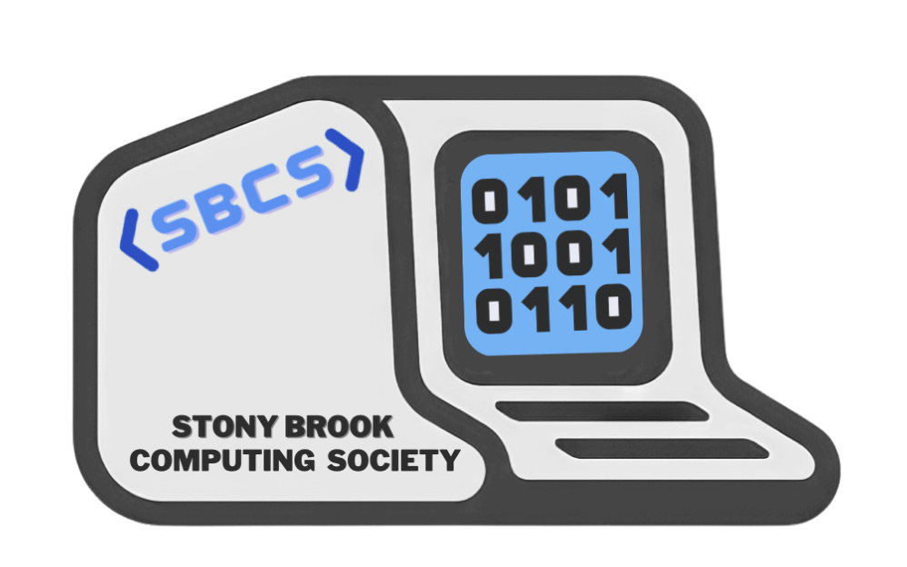
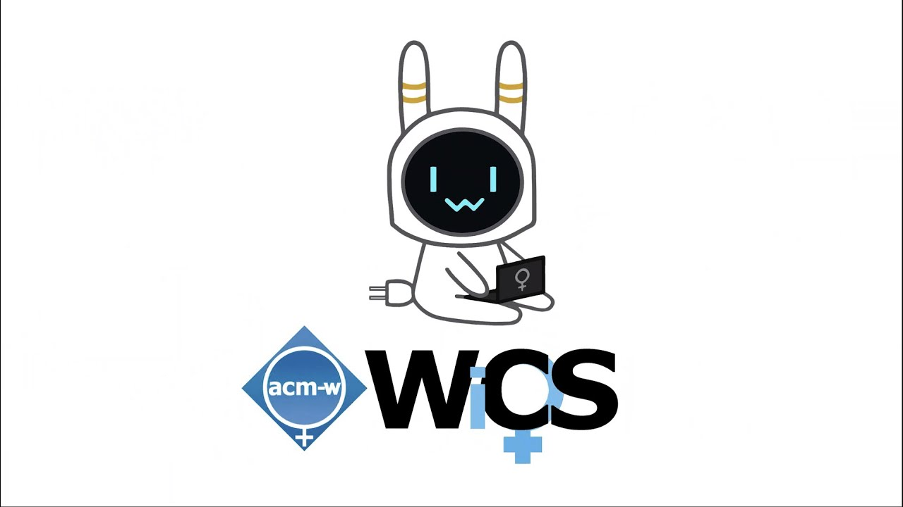

As the current sophomore representative of the club, my responsibilities involve collaborating with other clubs and outside companies
to host events. I took interest in joing SBCS because I wanted to be a part of a community that will allows students to learn about different
aspects of computer science, from career preparation to niche topics. As a club who accepts everyone no matter of what major,
race, gender, or any other aspect of identity, Stony Brook's Computing Society is a community that allows anyone who has interest in computer
science to learn about it and share unique experiences to its members. Events like interview prep sessions to introduction to Android Application Development
are beginner friendly and allow students to a good foundation about the opportunities in computer science. Recently, I have been working on a new logo
for the club and designing merch for our members!
Skills: Leadership, Communication, Organization, Collarboration, Design

As a member of the team, I will be working alongside several undergraduate fellows to developing a framework and computational models to
reliably exploit information from various sources in uncertain and potentially unfriendly enviroments. The central goal of this team is to advance ourunderstanding
of large-scale decision making, computatio, optimization, and machine learning algorithims against network and/or component failures and adversary attacks. I joined
this team in interest in learning more about cybersecurity and how networks against various types of attacks. I also hope to further my experience in machine learning
and be able to apply my skills to build a product with postive results.
Skills: Cybersecurity, Machine Learning, Privacy-Preserving, Optimization, Networks, Distributed Computing, Teamwork
In the duration of my participation in this team, I mainly focused on getting a good foundation in web application development. As someone who did not kow much about this
field within computer science, I was introduced to the basics of web development tools such as: React Js, Node Js, MongoDB, and GraphQL. A main part of my responsibilities during my time in this team included
conducting rsearch on json format maps and presenting a live tutorial on creating a RESTful API from scratch. My team's app called "SBU Maps" is an application that
helps students to navigate to a specific classroom within a secific building. While popular navigation apps like Google Maps and Apple Maps can direct you to an address, they cannot help help you
find the specific room within the building. SBU Maps utilizes Dijkstra's Algorithim to provide the most efficient path from one destination to another within a building. The purpose of "Tech Bussiness in Development"
is to identify and build web/cloud applications that provide unique opportuities and capabilities to the Stony Brook University Community. Products created are directly used to serve the needs of students amongst
the college-aged demographic. The team consists of students of different backgrounds and interests from computer science to entreprenuership. I became interested in joining this team to gain exeperience in
web devleopment and learn about the "bussiness side" of computer science.
Skills: Web Application Development, Bussiness, Teamwork
As an organization whose mission is to provide encouragement and support to women in the field of computing, WiCS aims to bridge the gap betweem men and women in Computer Science
and to improve women's involvement in the field. As an advocate for equity and inclusion myself, WiCS is a great community for support and making connections with those who have
similar goals and passions in computer science. As a former mentee, I had the opportunity to learn about the different fields of computer science while bonding with people about the
persepctive of being a woman in computing.
Key Words: Leadership, Community, Equity, Inclusion
